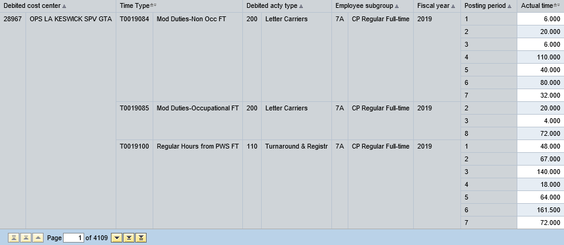

The straight, un adjusted hours in the DLM are sourced via custom BW queries which rely on the 9502 report data cube.
The Time Type, Debited Act Type and Employee Subgroup found in the 9502 are mapped to
Time Group,
Act Type Group
and GLCE Group by the DLM.
The query is ran for each fiscal year (DLM notation):
Current Year (TY - This Year)
Previous Year (LY - Last Year)
Two Years Previous (LLY - Last Last Year)
The hours in the custom query are identical to those in the standard 9502 report.
The custom nature of the query provides a high level of detail necessary for the calculation.
Output of BW Query [Z1_ZHOUYAN_DLM_9502_TY_35]
